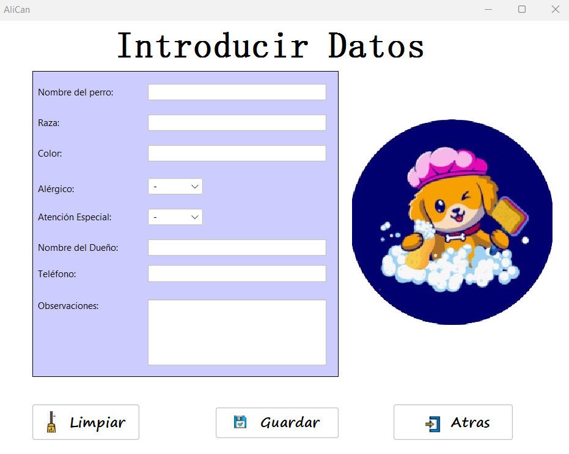

Descripción
Esta ventana corresponde al menú principal de la aplicación. Desde aquí podrás acceder a las funciones principales mediante cuatro botones:
- Guardar: abre un formulario para registrar un nuevo cliente, incluyendo los datos de la mascota y su dueño.
- Ver datos: muestra una lista con todos los clientes registrados. Desde esta sección podrás consultar, modificar o eliminar la información de las mascotas y sus dueños.
- Usuarios: permite gestionar los usuarios del sistema. Solo los administradores pueden acceder a esta sección para agregar, editar o eliminar trabajadores registrados.
- Salir: cierra la sesión actual y redirige al usuario a la pantalla de inicio de sesión.
Además, en la barra de herramientas encontrarás el menú Ayuda, que proporciona orientación sobre el uso de la aplicación.

Accesos rápidos
👉 Ventana Guardar
👉 Ventana Ver Datos
👉 Ventana Usuarios
Vista previa de ventanas
Ventana Guardar
Ventana Ver Datos